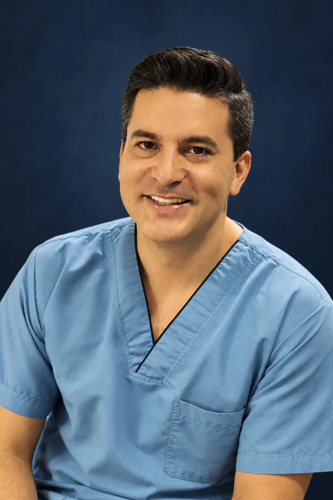

Considered care. Personal change.
Plastic, aesthetic and reconstructive surgery. A thoughtful conversation before every decision.
A surgeon’s perspective. Your personal story.
Dr. Camilo Lemos presents BodyCrafting as his approach to body contouring. Your goals, the assessment and the preparation guide an individual plan.
MedicinePontificia Universidad Javeriana
Plastic, aesthetic & reconstructive surgeryJuan N. Corpas · Clínica San Rafael
BodyCrafting
A personal approach to body contouring, discussed through an individual assessment.
Abdominal contour
Explore the options and considerations relevant to your anatomy and expectations.
Breast & facial procedures
A separate clinical conversation about goals, suitability and the care involved.
Every procedure begins with a medical assessment. The consultation determines the appropriate options.
A considered decision starts with questions.
Use this personal checklist to organise topics for your conversation with Dr. Lemos. It is not medical preparation advice.
Selections stay on this page and are not sent. The surgeon must define your individual assessment and care plan.